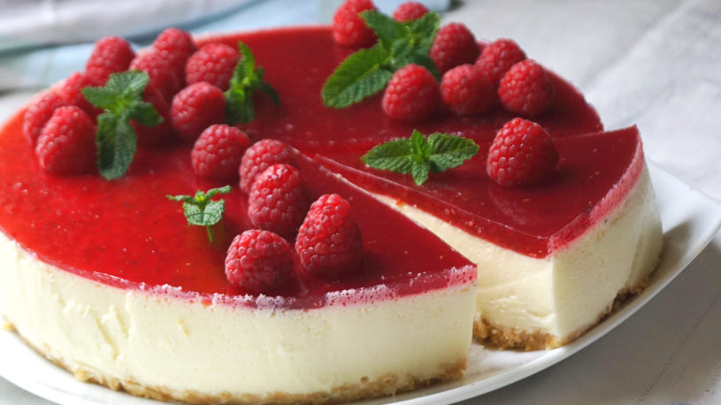

Tarta de Queso

- Tiempo:
- aprox. 1 hora
- Comensales:
- 4-6 personas
- Ingredientes para la base de galleta:
- 1-2 o 3 Paquetes de Galleta Maria
- 100gr Mantequilla
- Ingredientes para el relleno de la tarta:
- 400gr Nata Líquida para montar 35% materia grasa
- 100gr Azucar
- 2 Sobres de Cuajada
- 500gr Queso Philadelphia para untar
- Mermelada de fresa
Preparación:
Paso 1
Primero comenzaremos preparando la base de la tarta. Para ello trituraremos las galletas muy finitas. Por otro lado derretiremos al baño maria la mantequilla
y la mezclaremos con las galletas para formar una masa.
Paso 2
De seguido colocaremos esta masa en el fondo del molde que emplearemos para formar la tarta y la alisaremos para que se esparza por todo el fondo del molde.
La masa podra ocupar el grosor que deseamos de ahi que aconsejemos el uso de 1-2-3 paquetes de galletas segun gustemos.
Paso 3
Tras esto dejaremos el molde enfriar durante 15-20 minutos para que se endurezca la base de nuestra tarta. Mientras podemos comenzar con el relleno de la tarta.
Paso 4
Calentaremos la nata en un cazo a fuego lento, iremos incorporando el azúcar y removeremos con la nata, mezclaremos con el queso e incorporaremos las cuajadas, que
habremos diluido en un poco de leche. Consejo: seguir las recomendaciones del fabricante para diluir las cuajadas.
Paso 5
Remover todos los ingredientes hasta su completa disolución, en el momento que la mezcla comience a hervir (es importante que la cuajada rompa a hervir, ya que
si no lo hace, es posible que la tarta no cuaje) apartar inmediatamente para que no se pegue. IMPORTANTE: el calor excesivo puede llegar a quemar la mezcla y dejar un sabor
a quemado que la estropearía por completo.
Paso 6
Una vez conseguida la mezcla para la tarta de queso, la echaremos en el molde que tenemos ya preparado con la base de galleta. Dejaremos enfriar en la nevera
unas 6 horas aproximadamente y una vez cuajada la tarta de queso le decoraremos la superficie de esta con nuestra cobertura preferida, en este caso mermelada
de fresa
Paso 4
Desmoldar la tarta una vez que hayamos decorado la superficie y ya estará lista para servir.